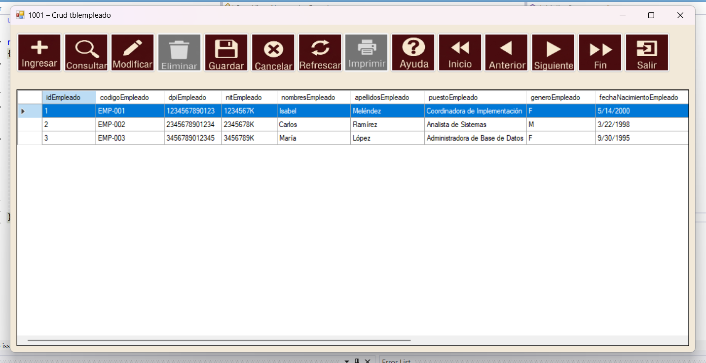
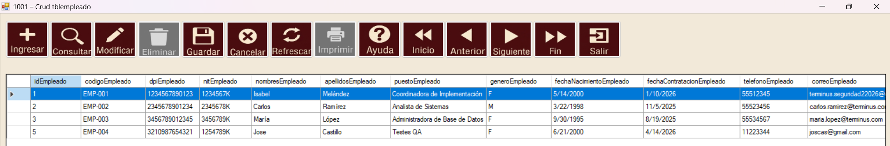
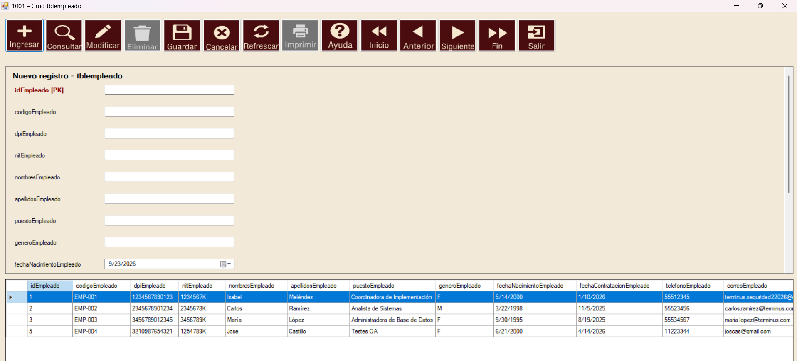
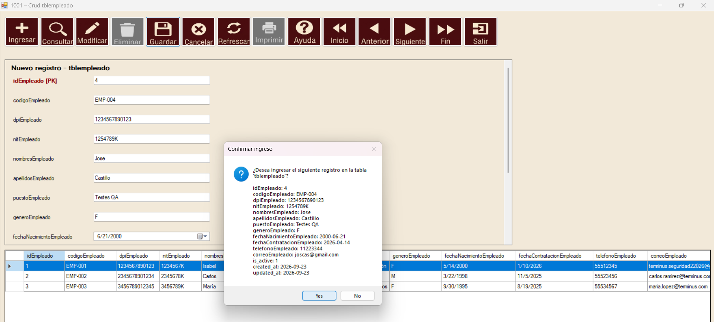
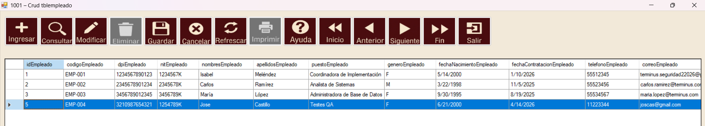
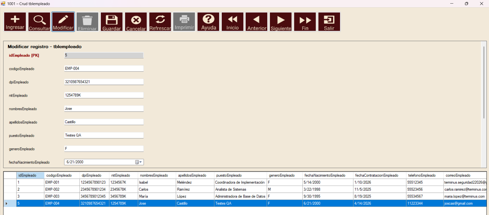
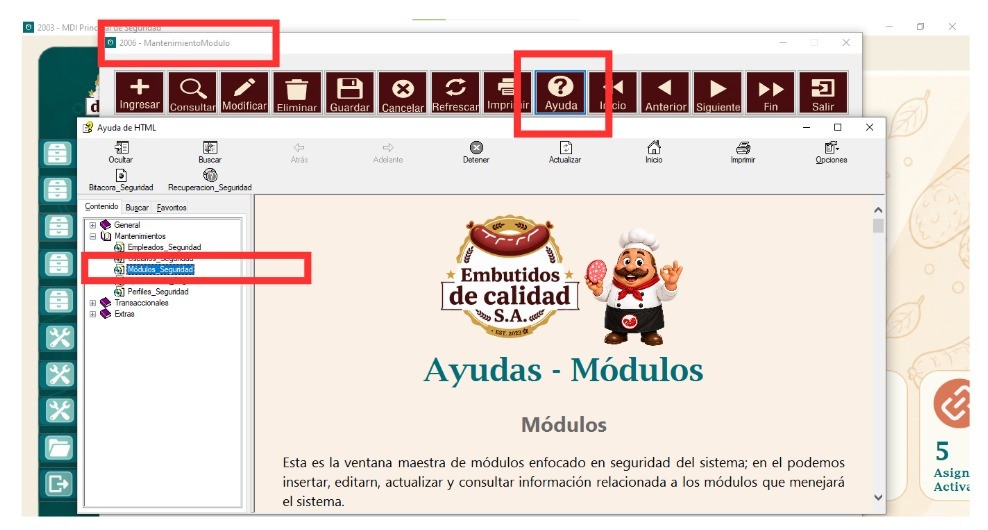
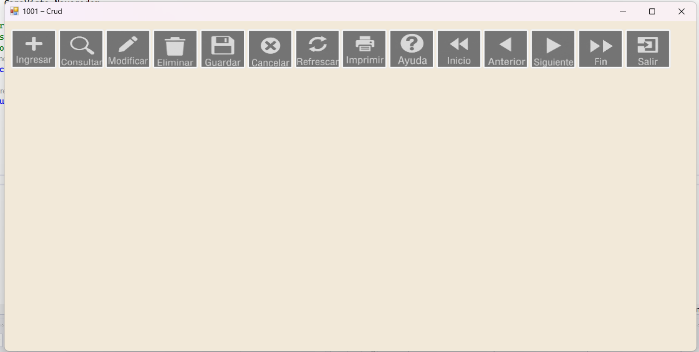
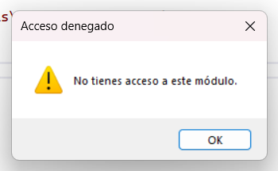

El Navegador es la barra de botones que aparece en las ventanas de mantenimiento del sistema,
desarrollado para Embutidos de Calidad S.A. Con ella se pueden ingresar, consultar, modificar
y eliminar registros de una tabla, desplazarse entre ellos e imprimir sus reportes, siempre
con la misma forma de trabajo en todas las ventanas.
Los botones que puede usar dependen de los permisos que tenga su usuario en esa ventana.
Todas las acciones que guardan, modifican o eliminan datos quedan registradas en la bitácora.

En la parte superior está la barra de botones del Navegador. Debajo de ella se despliega la tabla
con los registros y, cuando se ingresa o modifica un registro, el formulario con los campos.
Al hacer clic sobre una fila de la tabla, ese registro queda seleccionado y es sobre el que
trabajan los botones Modificar y Eliminar. Los botones que aparecen en gris están deshabilitados
porque su usuario no tiene ese permiso.

A continuación se detallan los pasos:
1. Presionar el botón Ingresar. Se abrirá el formulario "Nuevo registro" con los campos de la tabla.
2. Llenar los campos. Los campos automáticos, como el código del registro, no se pueden editar.
3. Los campos que se relacionan con otra tabla se eligen de una lista y las fechas se seleccionan
en el calendario.
4. Presionar el botón Guardar.

Antes de guardar, el sistema mostrará un resumen de los datos y preguntará si desea ingresar el registro. Presione Sí para guardarlo o No para regresar al formulario.

Si los datos son correctos, aparecerá el mensaje "Registro guardado correctamente." y el nuevo registro se mostrará en la tabla.

A continuación se detallan los pasos:
1. Presionar el botón Consultar. Se abrirá la ventana de Consultas.
2. Buscar y seleccionar el registro que desea ver.
3. La tabla del Navegador mostrará únicamente ese registro, listo para modificarlo o eliminarlo.
4. Para volver a ver todos los registros, presionar el botón Refrescar.
A continuación se detallan los pasos:
1. Seleccionar en la tabla la fila del registro que desea modificar.
2. Presionar el botón Modificar. Se abrirá el formulario "Modificar registro" con sus datos.
3. Realizar los cambios necesarios. El código del registro no se puede cambiar.
4. Presionar el botón Guardar y confirmar los cambios.
5. Si no hay ninguna fila seleccionada, el sistema mostrará el aviso
"Seleccione un registro en la tabla para Modificar."

A continuación se detallan los pasos:
1. Seleccionar en la tabla la fila del registro que desea eliminar.
2. Presionar el botón Eliminar.
3. El sistema preguntará si desea eliminar el registro seleccionado.
4. Al confirmar, aparecerá el mensaje "Registro eliminado correctamente." y el registro
desaparecerá de la tabla.
Si el registro está siendo usado por otra tabla, el sistema no permitirá eliminarlo y mostrará
un aviso indicando que existe una relación con otros datos.
Si está ingresando o modificando un registro y no desea guardar los cambios, presione el botón Cancelar. El formulario se cerrará y los datos de la tabla quedarán sin cambios.
El Navegador cuenta con el botón Refrescar, que vuelve a cargar todos los registros desde la base
de datos, y con botones para desplazarse entre los registros de la tabla:
1. Inicio va al primer registro.
2. Anterior retrocede uno.
3. Siguiente avanza uno.
4. Fin va al último registro.
Las ventanas de mantenimiento que usan el Navegador cuentan con una ayuda dinámica. Al presionar
el botón Ayuda, el Navegador detecta en qué ventana se encuentra y muestra la ayuda de esa
ventana en particular, por ejemplo la de Departamentos, Puestos o Jornadas, en lugar de una
ayuda general.
De esta forma, el usuario siempre ve la explicación de los campos y acciones de la ventana que
está usando, sin tener que buscarla. Si una ventana todavía no tiene su propia ayuda, se
mostrará esta ayuda general del Navegador.
Por ejemplo, en la ventana 2006 - Mantenimiento de Módulos, al presionar el botón Ayuda del
Navegador se abre directamente la ayuda de Módulos, ya seleccionada en el índice de la ayuda.

Al presionar el botón Imprimir se abre la ventana de reportes con los reportes disponibles para esa ventana. Desde ahí puede verlos, imprimirlos o exportarlos. Este botón solo está habilitado si su usuario tiene permiso de impresión.
Los botones Ingresar, Modificar, Eliminar e Imprimir se habilitan según los permisos que el
administrador le haya asignado a su usuario en Seguridad. Si un botón aparece en gris, no tiene
ese permiso en la ventana.
Si su usuario no tiene acceso a la ventana, todos los botones quedarán deshabilitados.

Si intenta entrar a un módulo al que no tiene acceso, el sistema mostrará el mensaje "No tienes acceso a este módulo." Si cree que debería tenerlo, comuníquese con el administrador del sistema.

Si los datos no se pueden guardar o eliminar, el sistema le indicará el motivo con uno de estos
mensajes:
1. Ya existe un registro con el mismo valor en un campo único.
2. Hay un campo obligatorio que no puede quedar vacío.
3. Uno de los valores ingresados es demasiado largo para el campo correspondiente.
4. Uno de los valores ingresados tiene un formato incorrecto para su campo.
5. El registro no puede guardarse o eliminarse porque existe una relación de llave foránea.
Corrija el dato indicado y vuelva a presionar Guardar.
El botón Salir cierra el formulario y la tabla, y deja visible solo la barra de botones del Navegador. Para cerrar la ventana por completo, dé clic en la X que se encuentra en la parte superior derecha.